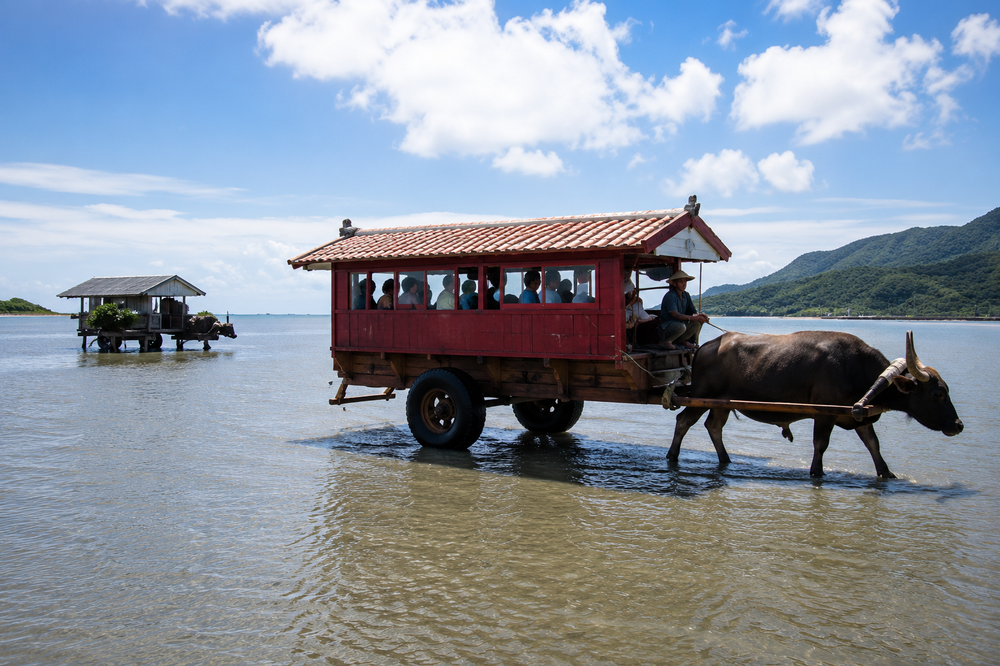
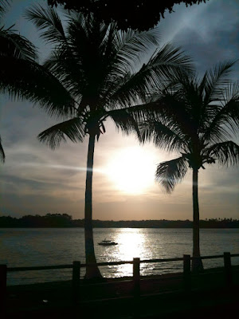
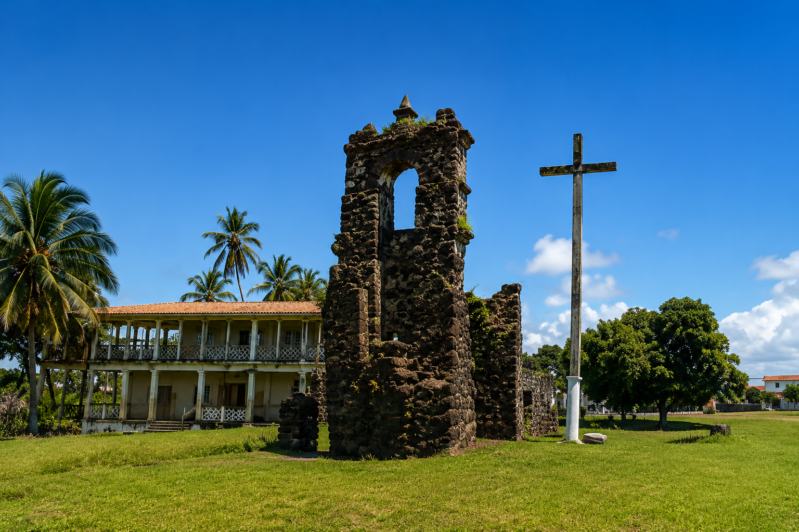

Localizado ao Norte do Pará,entre o mar e entre cidades como a capital,considerado o maior arquipélago (conjunto de ilhas) Marítimo-Fluvial (significa que está tanto em meio aos mares como aos rios) do mundo,composto por 17 cidades/municípios,cerca de 3 mil ilhas ou ilhotas e mais de 100 mil quilômetros quadrados,o Marajó é sem dúvidas um dos destinos mais diversificados que o país tem a oferecer.
Breve história
Do Mrabaió,Marajó significa algo como "tapamar" ou "barreira contra o mar".Entre os anos 400 e 1400 d.c,antes dos colonizadores,havia aqui uma sociedade mais desenvolvida que o restante da Amazônia,a qual possuia um esperto sistema contra enchentes,onde grandes e sofisticados montes de terras (tesos) eram feitos contra as fortes ondas,tinham também forte pesca e agricultura,mas ficaram conhecidos principalmente pelas suas habilidades em cerâmica fora do normal.E o mais curioso é que toda essa cultura é considerada uma "lenda",pois o povo marajoara existiu de fato,mas os europeus só chegaram nas ilhas quando aquela civilização avançada não existia mais,apenas outros povos já fragmentados,e não se sabe o porquê do desaparecimento,mas até hoje arqueólogos encontram com frequência,em escavações,artefatos e sítios arqueológicos que podem ajudar a solucionar o mistério.
Onde visitar
Soure
o Marajó não é apenas uma,mas sim,várias localidades,por isso não possui uma capital ou município central,mas Soure é a cidade mais famosa do arquipélago,justamente por ser a porta de entrada para esse mundo.Com urbanismo aliado a natureza,apresenta diversas fazendas,como São Jerônimo e Mironga que demonstram como é o modo de vida marajoara,inclusive os famosos passeios de búfalos,fazendo dessa a principal cidade para fazer as montarias. passeios com búfalos

Praia do Pesqueiro
Também situado em Soure,esta praia exuberante possui uma extensa faixa de areia com coqueiros ao longo do caminho,com pequenas cabanas de palha onde são servidos pratos dos mais diversos tipos,junte tudo as suas águas esverdeadas e você terá uma paisagem digna de filme.


Ruínas de Joanes
Localizada na ilha de Salvaterra,lém da bela paisagem,como o prórprio nome já diz,ruínas importantes se encontram lá, tais como poços de pedras,antigos currais de peixes e principalmente uma igreja despedaçada,feitas nas missões jesuíticas de padres portugueses,trazidos principalmente para afastar a influência de outros paises sobre a região de domínio português.É um ótimo local tanto para os amantes da natureza quanto para os curiosos de plantão.
